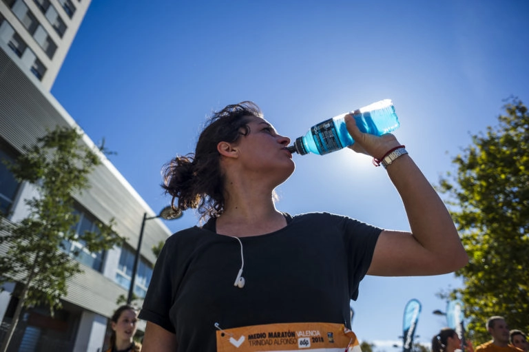

MAPA DEL RECORRIDO DE LA CARRERA

El recorrido de la carrea de la Maraton 2020 Valencia
| Nombre | Apellido | Dorsal |
|---|---|---|
| Pau | Ruiz | 123 |
| Pablo | Garcia | 124 |
| Victor | Perez | 125 |
| Javier | Hernandez | 126 |
| Sara | Ayuso | 127 |
| Maria | Ruiz | 128 |
| Alberto | Martinez | 129 |
| Daniel | Fernandez | 130 |
| Carlos | Molinero | 131 |
El recorrido de la carrea de la Maraton 2020 Valencia
Lo que comemos y lo que bebemos repercute directamente en nuestro rendimiento, no solo los días previos a la carrera, sino también durante los meses de entrenamiento. Vas a realizar un esfuerzo importante y es fundamental que tu nutrición sea coherente. Quizás sea el momento para introducir en vuestros hábitos de vida una dieta equilibrada. Evita el alcohol y sustancias tóxicas. Hidrátate bien, no solo los días previos a la carrera. Sigue una dieta variada, que se fundamente en hidratos de carbono y proteínas. Evita las grasas saturadas y aporta grasas insaturadas como las que están en el aceite de oliva y el pescado azul. En resumen: Come sano y equilibrado.

{kind=link}